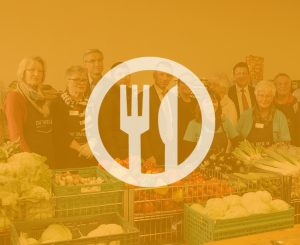

Die Tafel
In unserer heutigen Gesellschaft ist Solidarität mehr gefragt denn je. Es gibt viele Menschen,
die täglich mit Herausforderungen konfrontiert sind, die sich Viele kaum vorstellen können.
Grundbedürfnisse, wie gesundes Essen sind für Einige keine Selbstverständlichkeit. Selbst in
Deutschland leben Menschen, die hungern müssen. Besonders Kinder leiden unter dieser
Bedingung. Die Tafel hat sich zur Aufgabe gemacht dieses Problem zu bekämpfen und durch
das Verteilen von Lebensmitteln an Bedürftige einen Lichtblick in das Leben Vieler zu
bringen.

LDie Tafel initiiert spezifische Projekte, um gezielt auf verschiedene Bedürfnisse einzugehen.
Ein solches Projekt ist beispielsweise die Unterstützung von Schulkindern. Viele Kinder aus
sozial benachteiligten Familien haben nicht die Möglichkeit, sich ein ausgewogenes
Frühstück oder Mittagessen zu leisten. Die Tafel ermöglicht diesen Kindern durch gezielte
Aktionen eine bessere Ernährung, um ihre schulische Leistungsfähigkeit zu verbessern und
ihnen somit eine hoffnungsvollere Zukunft zu ermöglichen.
Ein weiteres beeindruckendes Projekt der Tafel ist die Einrichtung von Kochkursen für
Bedürftige. Hier lernen Menschen, die auf Unterstützung angewiesen sind, wie sie aus
einfachen und günstigen Zutaten schmackhafte und gesunde Mahlzeiten zubereiten können.
Dies vermittelt nicht nur Kochkenntnisse, sondern fördert auch das Selbstbewusstsein und
die Unabhängigkeit der Teilnehmer.
Die Notwendigkeit zu helfen, ist aktueller denn je, und die Tafel braucht unsere
Unterstützung, um diese wertvollen Projekte weiterführen zu können. Jeder gespendete
Euro fließt direkt in die Finanzierung dieser Projekte und hilft dabei, das Leben vieler
Menschen nachhaltig zu verbessern. Als Gemeinschaft können wir einen Unterschied
machen und dazu beitragen, dass niemand in unserer Gesellschaft hungrig bleiben muss.